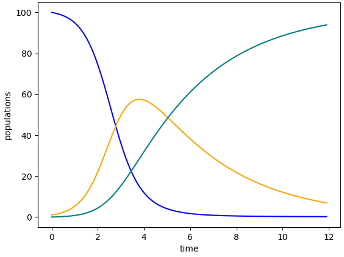

Chapter5Equilibrium Values and the Basic Reproduction Number \(\mathcal{R}_0\)
Goals
Understand the relationship between a compartmental disease model and equilibrium values for the populations in the model.
Develop a model that includes an incubation period.
Introduce the basic reproduction number \(\mathcal{R}_0\) and its implication for outbreaks.
By now, we have studied models from several perspectives. In Chapter 2 and the Zombie Game App, we generated data for an outbreak, constructed tables and graphs of data, and thought through how all these pieces of information fit together. Chapter 2 then introduced using a system of differential equations for describing the relationships. The Python code in Chapter 3 generated images of data points and solution curves for systems of differential equations. Finally, and crucially, we began drawing compartmental diagrams in Chapter 4.
These multiple forms of describing models all work together. They allow us to understand models and their results through graphs, equations, data, and diagrams. Now that we have these tools for discussing models, we build ways to mathematically analyze models. Some of this analysis is necessary for confirming that our models make sense in relationship to the real world. Additional analysis of models gives us ways to think about controlling outbreaks.
Our starting point for analyzing models, using a combination of visual and equation-based understanding, begins in Exploration 5.1.
Exploration5.1.Rise and Fall of an Epidemic.
We first saw the SIR model in Chapter 4. The compartmental diagram appears in Figure 4.3 and the system of differential equations is the following:
\begin{align*}
\frac{dS}{dt} \amp = -\beta S I \\
\frac{dI}{dt} \amp = \beta S I - \gamma I \\
\frac{dR}{dt} \amp = \gamma I.
\end{align*}
Throughout this Exploration, continue to connect the model, graphs of its solution curves, and real-world meaning.
(a)
Look at the expressions on the right-hand sides of the differential equations for the SIR model.
Which terms are positive? Which terms are negative? What does this tell you about how each population can flow through the compartments?
For each differential equation, what signs (\(+\text{,}\)\(-\text{,}\) or \(0\)) are possible on the right-hand side? What does this tell you about the solution curves for the model?
(b)
For the graph in Figure 5.1, which curve goes with which compartment of the SIR model? Justify your reasoning in two ways:
Use your sign analysis, that is, the work you just did on describing solution curves based on the sign (\(+\text{,}\)\(-\text{,}\) or \(0\)) of the right-hand side of that compartment's differential equation in the SIR model.
Describe what happens in the Zombie Game App 1  when we run a simulation including zombie mortality, and confirm that these curves make sense in that context.

Figure5.1.One set of solution curves for the SIR model
Section5.1Using Calculus to Analyze Models
The work of Exploration 5.1 involves central ideas from introductory calculus. The equations of the SIR model are differential equations, which means they include derivatives. Derivatives represent change, and we often describe this change as the slope of a graph. The graphs we use in studying models are the solution curves of the model. That is, given equations for, say, \(dS/dt\text{,}\)\(dI/dt\text{,}\) and \(dR/dt\text{,}\) the solution curves are the graphs of \(S(t)\text{,}\)\(I(t)\text{,}\) and \(R(t)\text{,}\) with time \(t\) on the horizontal axis, and the populations \(S\text{,}\)\(I\text{,}\) and \(R\) on the vertical axis.
Now, let us continue with model analysis, specifically naming calculus concepts along the way.
Activity5.2.
Consider the SIR model:
\begin{align*}
\frac{dS}{dt} \amp = -\beta S I \\
\frac{dI}{dt} \amp = \beta S I - \gamma I \\
\frac{dR}{dt} \amp = \gamma I.
\end{align*}
Each equation in this model represents the change in a single compartment's population, over time. How can we use the equations in the model to represent the change in total population over time?
Determine the value of the change in total population (you should be able to compute a number). What does this number tell us about the total population in our model?
Add together the three differential equations. What is the meaning of the left-hand side? What is the meaning of the right-hand side? And what value do we obtain on the right-hand side when summing the differential equations?
Therefore, summing the three differential equations determines the change over time of the total population.
On the right-hand side:
\begin{align*}
(-\beta S I)+(\beta S I - \gamma I)+(\gamma I) \amp = 0.
\end{align*}
Since the three differential equations add up to zero, the change in total population is \(0\text{.}\) This tells us that the total population in our model does not change. In other words, the size of the total population remains constant.
The analysis in Activity 5.2 includes the following calculus concepts.
The sum of derivatives equals the derivative of the sum: \(\frac{dS}{dt}+\frac{dI}{dt}+\frac{dR}{dt} = \frac{d(S+I+R)}{dt}\text{.}\)
When the derivative of a function equals \(0\text{,}\) the function is unchanging: \(\frac{d(S+I+R)}{dt}=0\) indicates that \((S+I+R)(t)=S(t)+I(t)+R(t)\) is unchanging.
In an outbreak that occurs over a relatively short time, it may make complete sense for a population to be unchanging. Or in some cases, the population may be changing so little, relative to the total population, that we do not need to account for the change. Noticing when population change is \(0\text{,}\) or close to \(0\text{,}\) allows us to write relatively simple models that do not try to incorporate births, deaths, immigration, emigration, or other population changes. Models that represent a longer span of time may need to account for changes in population.
Some models do need to account for changes in population. As one example, models that represent a longer span of time may incorporate births and deaths. We will see these in a later chapter.
We purposely do not designate here amounts of time that are “relatively short” or “longer”. Modelers make decisions about whether to list population changes based on length of time or other reasons. They then provide their decisions when describing their models, and they include some form of justification for each decision.
Next, we work through some ways the model solutions can change as parameter values change.
Activity5.3.
Use the code below to create three different graphs of solution curves to the SIR model.
When the right-hand side of a differential equation can only be positive in sign (or possibly \(0\)), the solution curve for that differential equation can only grow (or level out to horizontal). Similarly, when the right-hand side of a differential equation can only be negative (or \(0\)), the solution curve for that differential equation can only decrease (or level out to horizontal). Sometimes, however, the right-hand side of a differential equation can be either positive or negative (or \(0\)), depending on the relative values of variables and parameters.
Describe R0, give formulas for R0 for multiple models, connect with beta, play with values of beta, refer to optional section on solving for R0
Figure5.2.One possible \(SEI\) (Susceptible, Exposed-and-incubating, Infectious) compartmental diagram